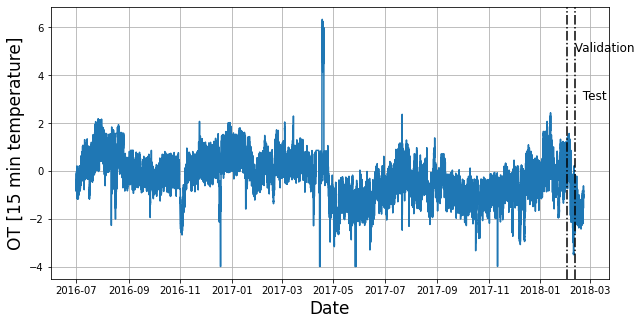

!pip install neuralforecast datasetsforecastProbabilistic Long-Horizon
Long-horizon forecasting is challenging because of the volatility of the predictions and the computational complexity. To solve this problem we created the NHITS model and made the code available NeuralForecast library. NHITS specializes its partial outputs in the different frequencies of the time series through hierarchical interpolation and multi-rate input processing. We model the target time-series with Student’s t-distribution. The NHITS will output the distribution parameters for each timestamp.
In this notebook we show how to use NHITS on the ETTm2 benchmark dataset for probabilistic forecasting. This data set includes data points for 2 Electricity Transformers at 2 stations, including load, oil temperature.
We will show you how to load data, train, and perform automatic hyperparameter tuning, to achieve SoTA performance, outperforming even the latest Transformer architectures for a fraction of their computational cost (50x faster).
You can run these experiments using GPU with Google Colab.

1. Libraries
2. Load ETTm2 Data
The LongHorizon class will automatically download the complete ETTm2 dataset and process it.
It return three Dataframes: Y_df contains the values for the target variables, X_df contains exogenous calendar features and S_df contains static features for each time-series (none for ETTm2). For this example we will only use Y_df.
If you want to use your own data just replace Y_df. Be sure to use a long format and have a simmilar structure than our data set.
import pandas as pd
from datasetsforecast.long_horizon import LongHorizon# Change this to your own data to try the model
Y_df, _, _ = LongHorizon.load(directory='./', group='ETTm2')
Y_df['ds'] = pd.to_datetime(Y_df['ds'])
# For this excercise we are going to take 960 timestamps as validation and test
n_time = len(Y_df.ds.unique())
val_size = 96*10
test_size = 96*10
Y_df.groupby('unique_id').head(2)| unique_id | ds | y | |
|---|---|---|---|
| 0 | HUFL | 2016-07-01 00:00:00 | -0.041413 |
| 1 | HUFL | 2016-07-01 00:15:00 | -0.185467 |
| 57600 | HULL | 2016-07-01 00:00:00 | 0.040104 |
| 57601 | HULL | 2016-07-01 00:15:00 | -0.214450 |
| 115200 | LUFL | 2016-07-01 00:00:00 | 0.695804 |
| 115201 | LUFL | 2016-07-01 00:15:00 | 0.434685 |
| 172800 | LULL | 2016-07-01 00:00:00 | 0.434430 |
| 172801 | LULL | 2016-07-01 00:15:00 | 0.428168 |
| 230400 | MUFL | 2016-07-01 00:00:00 | -0.599211 |
| 230401 | MUFL | 2016-07-01 00:15:00 | -0.658068 |
| 288000 | MULL | 2016-07-01 00:00:00 | -0.393536 |
| 288001 | MULL | 2016-07-01 00:15:00 | -0.659338 |
| 345600 | OT | 2016-07-01 00:00:00 | 1.018032 |
| 345601 | OT | 2016-07-01 00:15:00 | 0.980124 |
Important
DataFrames must include all ['unique_id', 'ds', 'y'] columns. Make sure y column does not have missing or non-numeric values.
Next, plot the HUFL variable marking the validation and train splits.
import matplotlib.pyplot as plt# We are going to plot the temperature of the transformer
# and marking the validation and train splits
u_id = 'HUFL'
x_plot = pd.to_datetime(Y_df[Y_df.unique_id==u_id].ds)
y_plot = Y_df[Y_df.unique_id==u_id].y.values
x_val = x_plot[n_time - val_size - test_size]
x_test = x_plot[n_time - test_size]
fig = plt.figure(figsize=(10, 5))
fig.tight_layout()
plt.plot(x_plot, y_plot)
plt.xlabel('Date', fontsize=17)
plt.ylabel('OT [15 min temperature]', fontsize=17)
plt.axvline(x_val, color='black', linestyle='-.')
plt.axvline(x_test, color='black', linestyle='-.')
plt.text(x_val, 5, ' Validation', fontsize=12)
plt.text(x_test, 3, ' Test', fontsize=12)
plt.grid()
plt.show()
plt.close()
3. Hyperparameter selection and forecasting
The AutoNHITS class will automatically perform hyperparamter tunning using Tune library, exploring a user-defined or default search space. Models are selected based on the error on a validation set and the best model is then stored and used during inference.
The AutoNHITS.default_config attribute contains a suggested hyperparameter space. Here, we specify a different search space following the paper’s hyperparameters. Notice that 1000 Stochastic Gradient Steps are enough to achieve SoTA performance. Feel free to play around with this space.
from ray import tune
from neuralforecast.auto import AutoNHITS
from neuralforecast.core import NeuralForecast
from neuralforecast.losses.pytorch import DistributionLoss
import logging
logging.getLogger("pytorch_lightning").setLevel(logging.WARNING)horizon = 96 # 24hrs = 4 * 15 min.
# Use your own config or AutoNHITS.default_config
nhits_config = {
"learning_rate": tune.choice([1e-3]), # Initial Learning rate
"max_steps": tune.choice([1000]), # Number of SGD steps
"input_size": tune.choice([5 * horizon]), # input_size = multiplier * horizon
"batch_size": tune.choice([7]), # Number of series in windows
"windows_batch_size": tune.choice([256]), # Number of windows in batch
"n_pool_kernel_size": tune.choice([[2, 2, 2], [16, 8, 1]]), # MaxPool's Kernelsize
"n_freq_downsample": tune.choice([[168, 24, 1], [24, 12, 1], [1, 1, 1]]), # Interpolation expressivity ratios
"activation": tune.choice(['ReLU']), # Type of non-linear activation
"n_blocks": tune.choice([[1, 1, 1]]), # Blocks per each 3 stacks
"mlp_units": tune.choice([[[512, 512], [512, 512], [512, 512]]]), # 2 512-Layers per block for each stack
"interpolation_mode": tune.choice(['linear']), # Type of multi-step interpolation
"random_seed": tune.randint(1, 10),
"scaler_type": tune.choice(['robust']),
"val_check_steps": tune.choice([100])
}
Tip
Refer to https://docs.ray.io/en/latest/tune/index.html for more information on the different space options, such as lists and continous intervals.m
To instantiate AutoNHITS you need to define:
h: forecasting horizonloss: training loss. Use theDistributionLossto produce probabilistic forecasts.config: hyperparameter search space. IfNone, theAutoNHITSclass will use a pre-defined suggested hyperparameter space.num_samples: number of configurations explored.
models = [AutoNHITS(h=horizon,
loss=DistributionLoss(distribution='StudentT', level=[80, 90]),
config=nhits_config,
num_samples=5)]Fit the model by instantiating a NeuralForecast object with the following required parameters:
models: a list of models.freq: a string indicating the frequency of the data. (See panda’s available frequencies.)
# Fit and predict
nf = NeuralForecast(
models=models,
freq='15min')The cross_validation method allows you to simulate multiple historic forecasts, greatly simplifying pipelines by replacing for loops with fit and predict methods.
With time series data, cross validation is done by defining a sliding window across the historical data and predicting the period following it. This form of cross validation allows us to arrive at a better estimation of our model’s predictive abilities across a wider range of temporal instances while also keeping the data in the training set contiguous as is required by our models.
The cross_validation method will use the validation set for hyperparameter selection, and will then produce the forecasts for the test set.
Y_hat_df = nf.cross_validation(df=Y_df, val_size=val_size,
test_size=test_size, n_windows=None)4. Visualization
Finally, we merge the forecasts with the Y_df dataset and plot the forecasts.
Y_hat_df = Y_hat_df.reset_index(drop=True)
Y_hat_df = Y_hat_df[(Y_hat_df['unique_id']=='OT') & (Y_hat_df['cutoff']=='2018-02-11 12:00:00')]
Y_hat_df = Y_hat_df.drop(columns=['y','cutoff'])plot_df = Y_df.merge(Y_hat_df, on=['unique_id','ds'], how='outer').tail(96*10+50+96*4).head(96*2+96*4)
plt.plot(plot_df['ds'], plot_df['y'], c='black', label='True')
plt.plot(plot_df['ds'], plot_df['AutoNHITS-median'], c='blue', label='median')
plt.fill_between(x=plot_df['ds'],
y1=plot_df['AutoNHITS-lo-90'], y2=plot_df['AutoNHITS-hi-90'],
alpha=0.4, label='level 90')
plt.legend()
plt.grid()
plt.plot()[]
References
Give us a ⭐ on Github